PALM JUMEIRAH
La Prouesse Architectural au Coeur de Dubaï
Symbole du génie architectural de Dubaï, Palm Jumeirah est une île artificielle en forme de palmier, visible depuis l’espace, qui mêle luxe, loisirs et mer turquoise.
Symbole du génie architectural de Dubaï, Palm Jumeirah est une île artificielle en forme de palmier, visible depuis l’espace, qui mêle luxe, loisirs et mer turquoise.
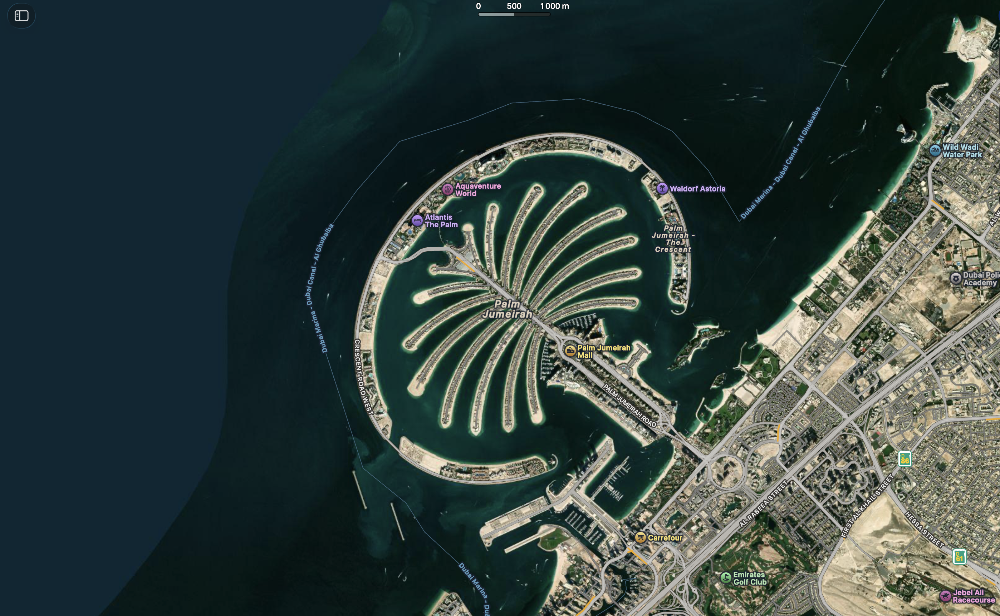
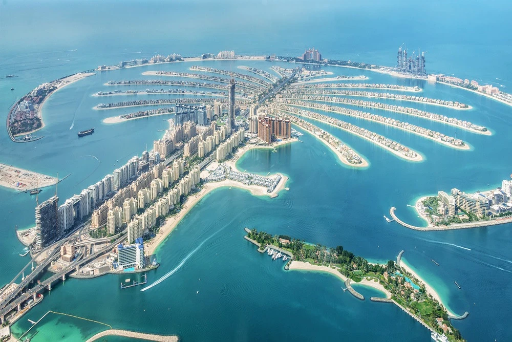
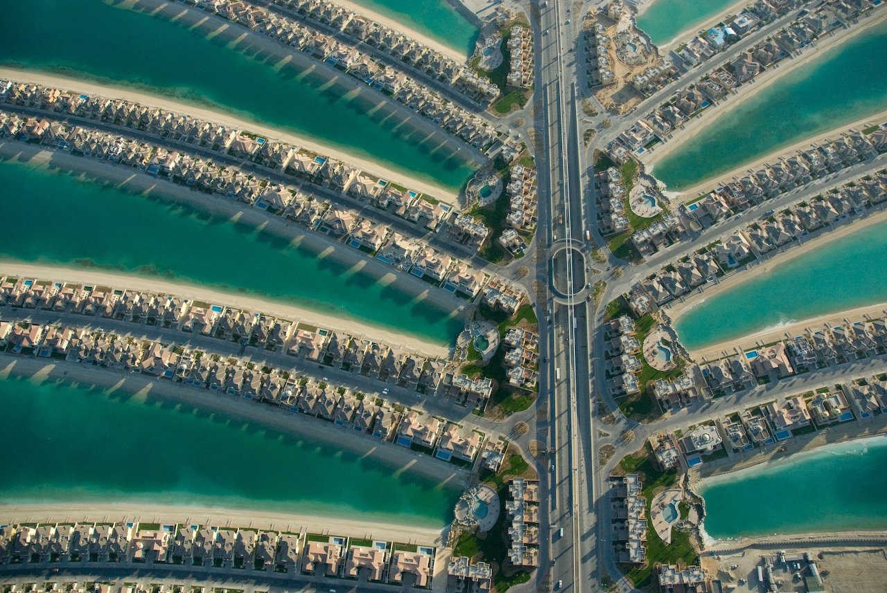
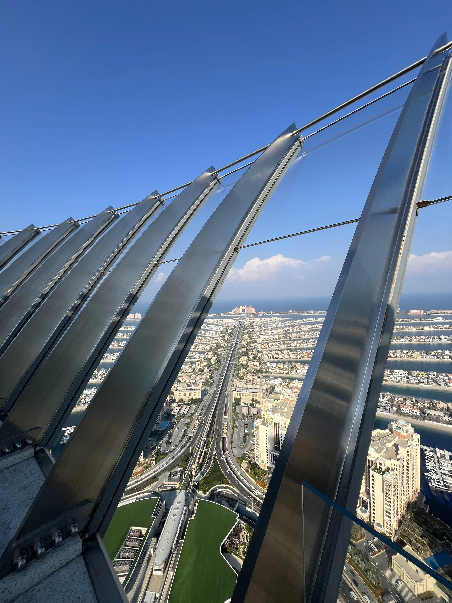
Palm Jumeirah, inaugurée en 2001 par Nakheel Properties, est une île artificielle en forme de palmier composée d’un tronc, de 16 palmes et d’un croissant périphérique. Fruit d’un exploit d’ingénierie maritime, elle a mobilisé plus de 94 millions de m³ de sable et 7 millions de tonnes de roches. Aujourd’hui, elle accueille résidences, hôtels de luxe et plages privées.
16 5KM 11KM
Branches de Tronc de Croissant
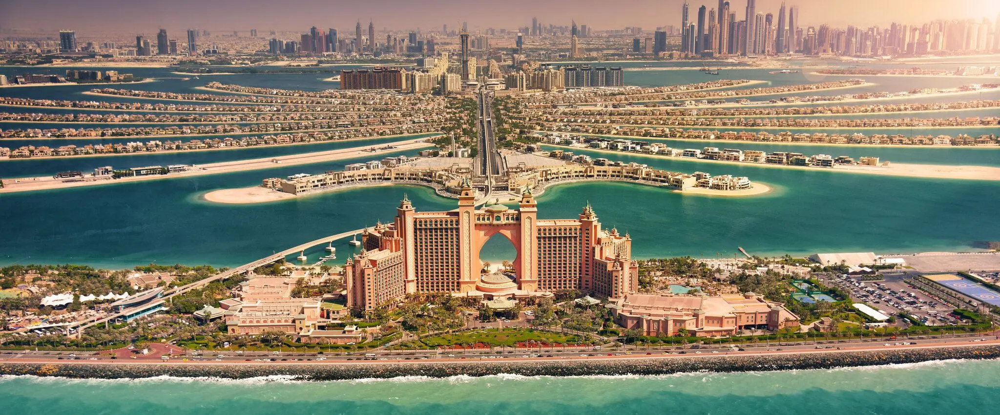
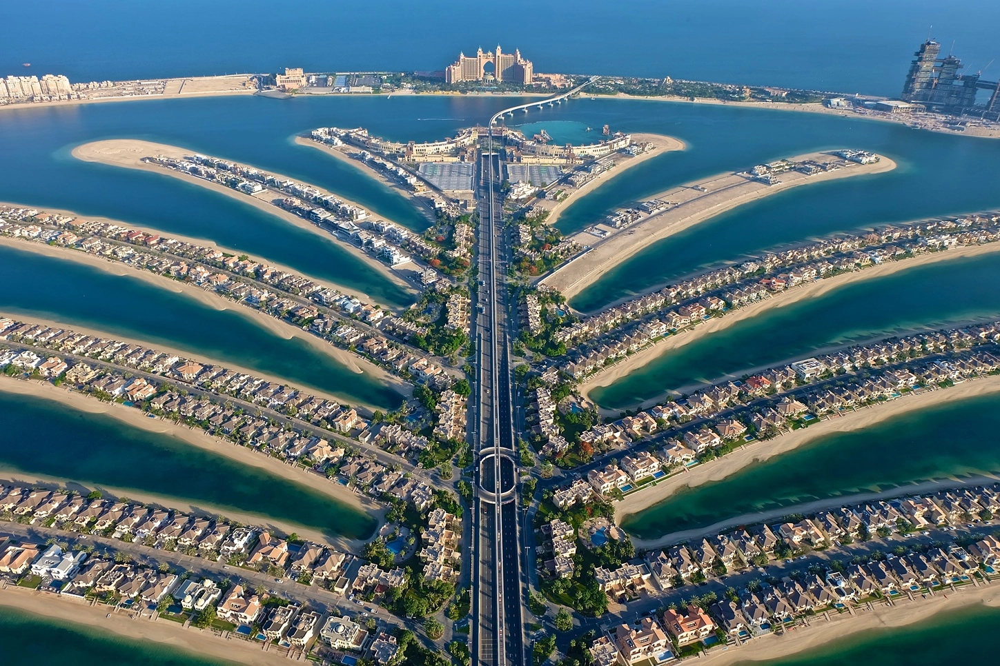
Depuis 2001, Palm Jumeirah s’impose comme un exploit d’ingénierie et un symbole d’innovation à Dubaï. Achevée en 2006, l’île a vu l’inauguration de l’hôtel Atlantis en 2008 et le développement de nouvelles résidences, attractions et du monorail entre 2010 et 2020. En 2023, le projet voisin Palm Jebel Ali a été lancé pour créer une île encore plus vaste.
12MD $ 15KM² 4,5KM
Coûts Total Surface Total de Réseaux Electriques Soutterains
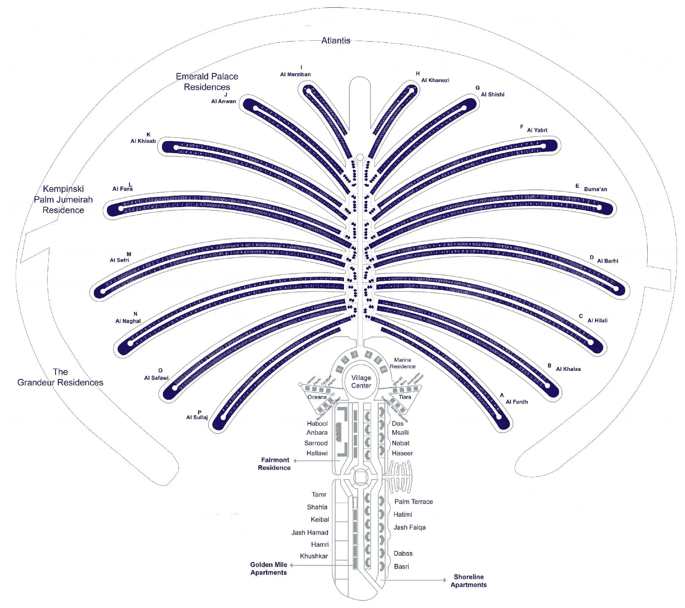

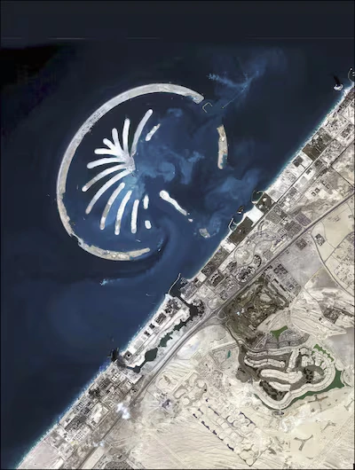
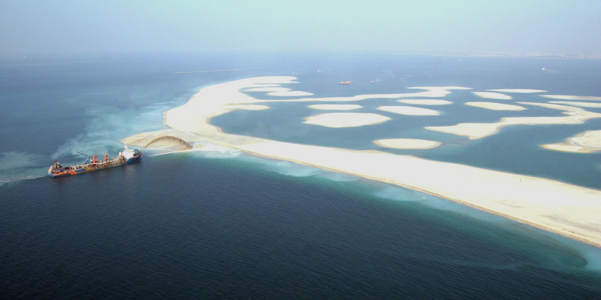
Entre plages privées, complexes aquatiques, restaurants primés et expériences marines uniques, l’île offre une palette d’activités alliant détente, immersion et sensations.
2,3 KM 1,5 KM 105+
Rivière Lente Plages Toboggans
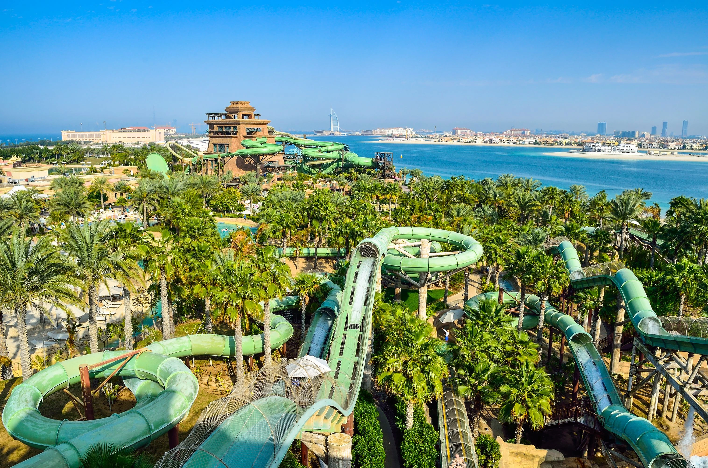
Un monde aquatique d’exception où adrénaline, fun et luxe se conjuguent à chaque attraction, offrant une expérience inoubliable et immersive sur l’eau.
250+ 65K 1H
Espèces Marines Animaux Marins Visites

Des galeries vitrées dévoilant des écosystèmes marins rares, pour une découverte sereine et spectaculaire au sein de l’Atlantis.
8KM 25N 90M
Distance Vitesse Durée
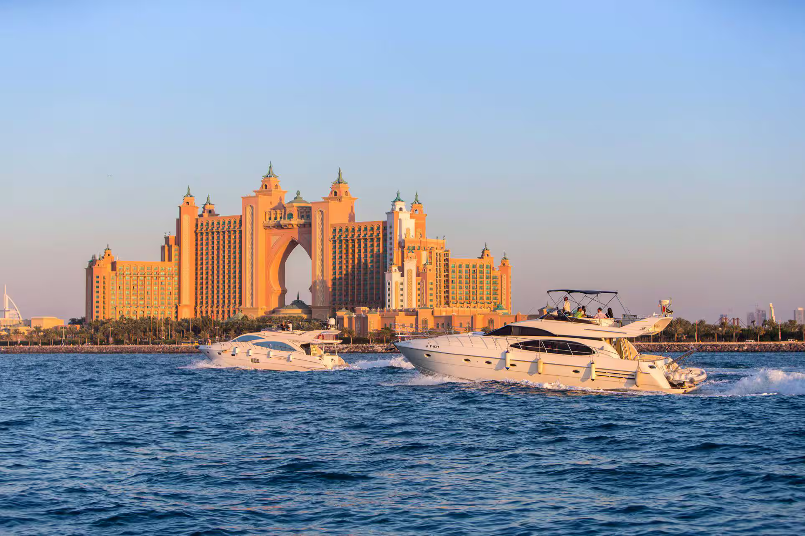
Une balade en yacht offrant une vue privilégiée sur l’archipel, ses hôtels emblématiques et ses eaux turquoise, pour un moment mêlant confort, détente et élégance en mer.
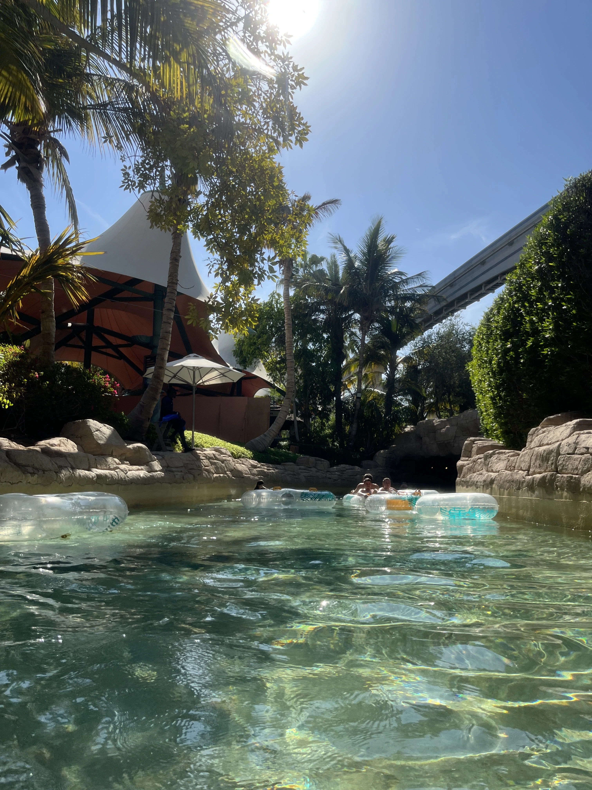
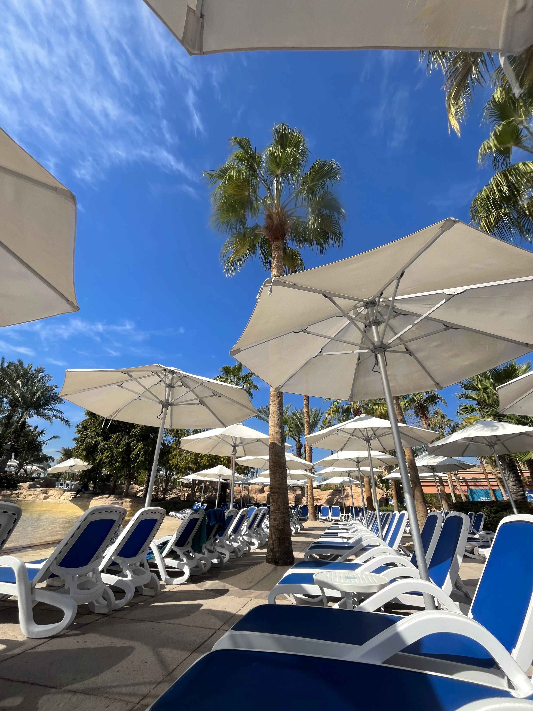
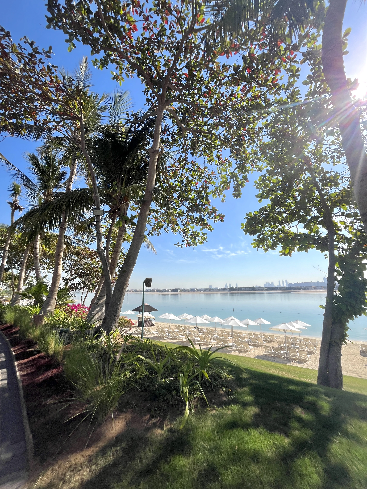
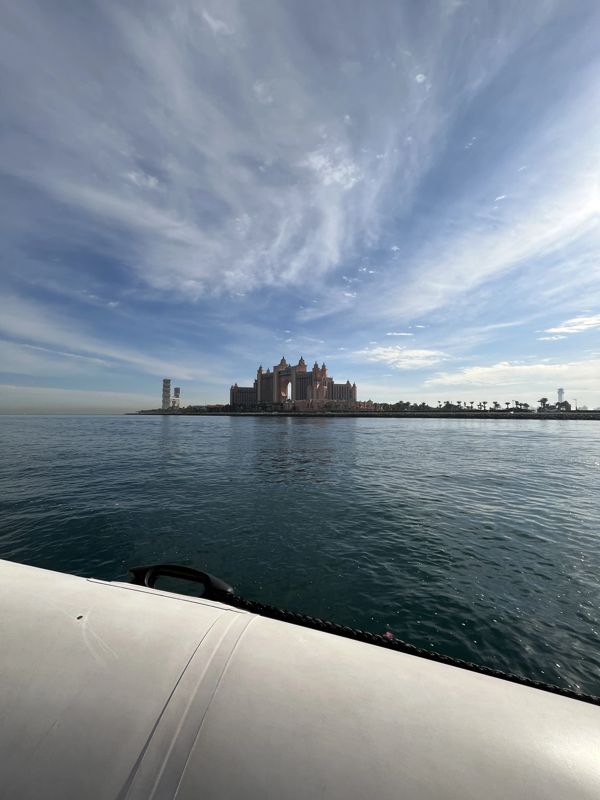